This case study highlights the development of a recipe website using PHP, focusing on creating a dynamic, data-driven platform that integrates a MySQL database to retrieve and display recipes. The project aligns with the goals of the course, which emphasizes server-side programming, handling user input, managing databases, and implementing key features such as user authentication and dynamic content retrieval. The website aims to simplify recipe browsing by offering search and filter functionalities, providing users with an intuitive and interactive experience.
Key success metrics include:
Improved user navigation through streamlined search features.
High engagement with the recipe content.
Positive feedback on the functionality and design.
Context and Challenge
Background
This is an independent project assigned as a practical exercise to deepen understanding of server-side scripting (PHP) and how it integrates with client-side technologies. The project also introduced database management concepts through phpMyAdmin, culminating in a functional, data-driven web application.
Timeline
The project spanned 11 weeks, divided into three distinct phases:
Alpha Phase: Focused on branding and creating a responsive website using HTML, CSS, and JavaScript.
Beta Phase: Transitioned to using PHP as the primary scripting language. Developed a functioning prototype that is responsive across devices (small to large screens) and includes dynamic content driven by a MySQL database.
Final Phase: Polished the project to ensure all features worked seamlessly and met the project criteria.
The Problem
The challenge was to design and develop a fully functional recipe website that dynamically loads data from a database while providing users with an engaging and intuitive experience for browsing and filtering recipes.
Goals & Objectives
Develop a dynamic website using PHP as the primary language.
Integrate MySQL for database management and dynamic content.
Create user-friendly features such as search, filtering, and detailed recipe pages.
Ensure responsiveness across various screen sizes.
This was a solo project, where I managed all aspects of development, from concept to completion.
Process and Insight
Alpha Phase
I started with branding by selecting a logo that I found visually appealing and building the website's design around it. From there, I developed a cohesive color palette and design aesthetic. Once the design foundation was set, I built the initial static version of the website using HTML, CSS, and JavaScript, ensuring it was responsive and visually appealing.
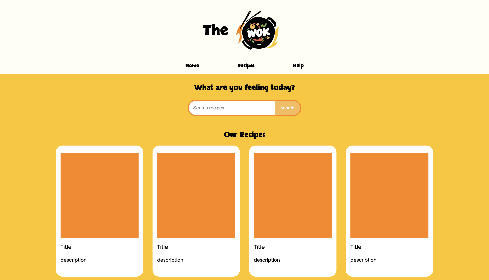
Beta Phase
During this phase, I transitioned the static pages into dynamic ones using PHP. I established database connections with MySQL to store and retrieve recipe data efficiently. Using phpMyAdmin, I designed and managed a database to hold all the recipe details, including titles, subtitles, descriptions, ingredients, and images. I then integrated these elements into the website, enabling dynamic content display.
I decided to enhance the homepage by adding a feature to display three random recipes using a PHP query. F
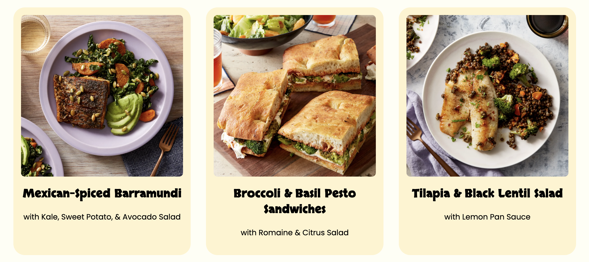
For the recipe page, I implemented a search and filter functionality, leveraging a foreach loop to dynamically display recipes based on user input or applied filters.
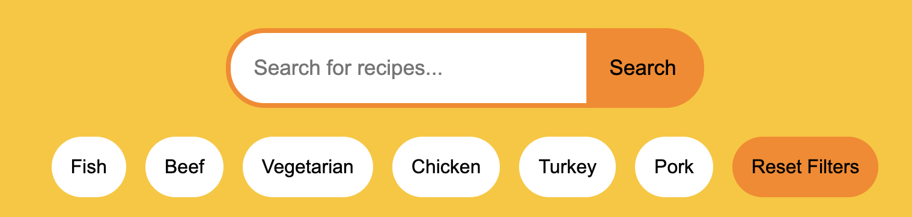
Final Phase
In the final phase, I focused on polishing the project to ensure all PHP scripts and database queries worked seamlessly. I optimized the code for better performance and conducted extensive responsive testing across various devices to guarantee a consistent user experience.
On the homepage, I implemented a feature to display three random recipes that update every time the page reloads. To ensure easy navigation, I added a "View All Recipes" button that links directly to the main recipe page.
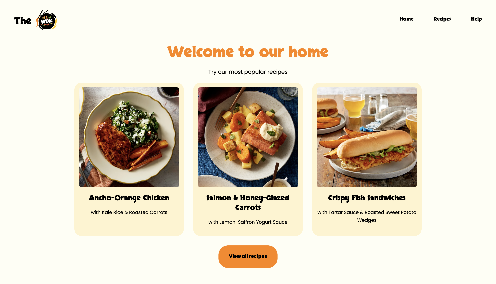
Large Home Page
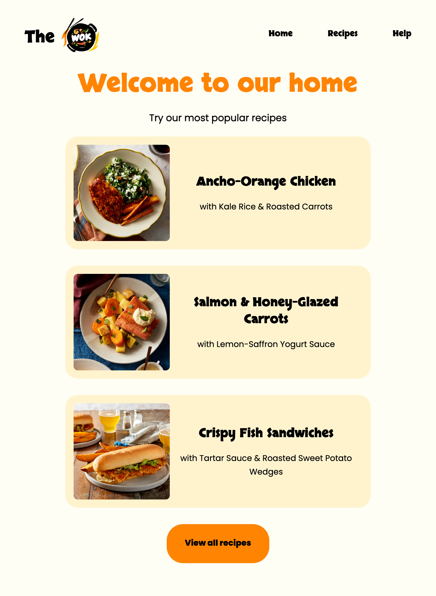
Medium Home Page
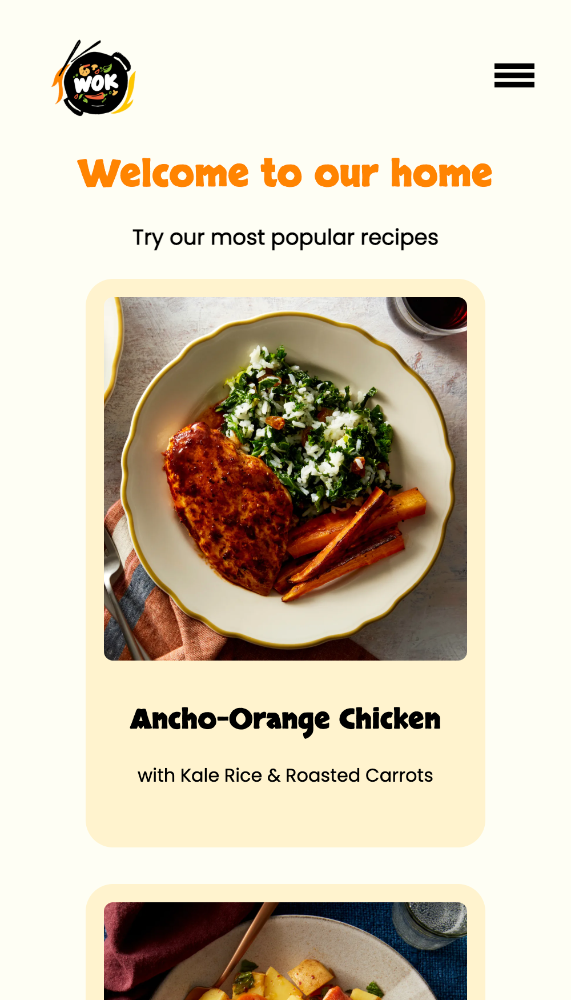
Small Home Page
Recipe Page
The recipe page displays 40 recipes and includes a search bar and a protein filter. Users can search for recipes using keywords or narrow down results by selecting a specific protein type. I also added a "Clear Filter" button, which resets the filters and restores the full list of recipes. Each recipe card includes a clickable link that redirects users to its detailed page.
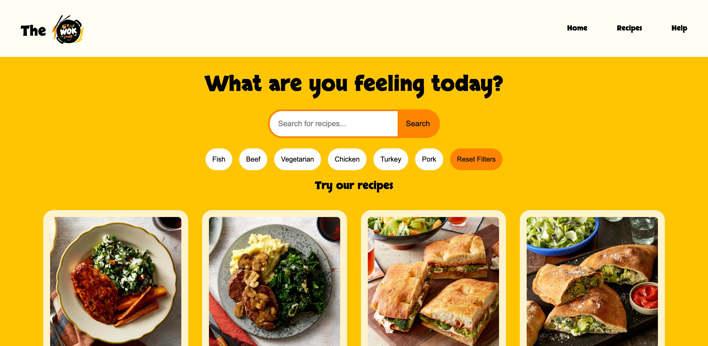
Large Home Page
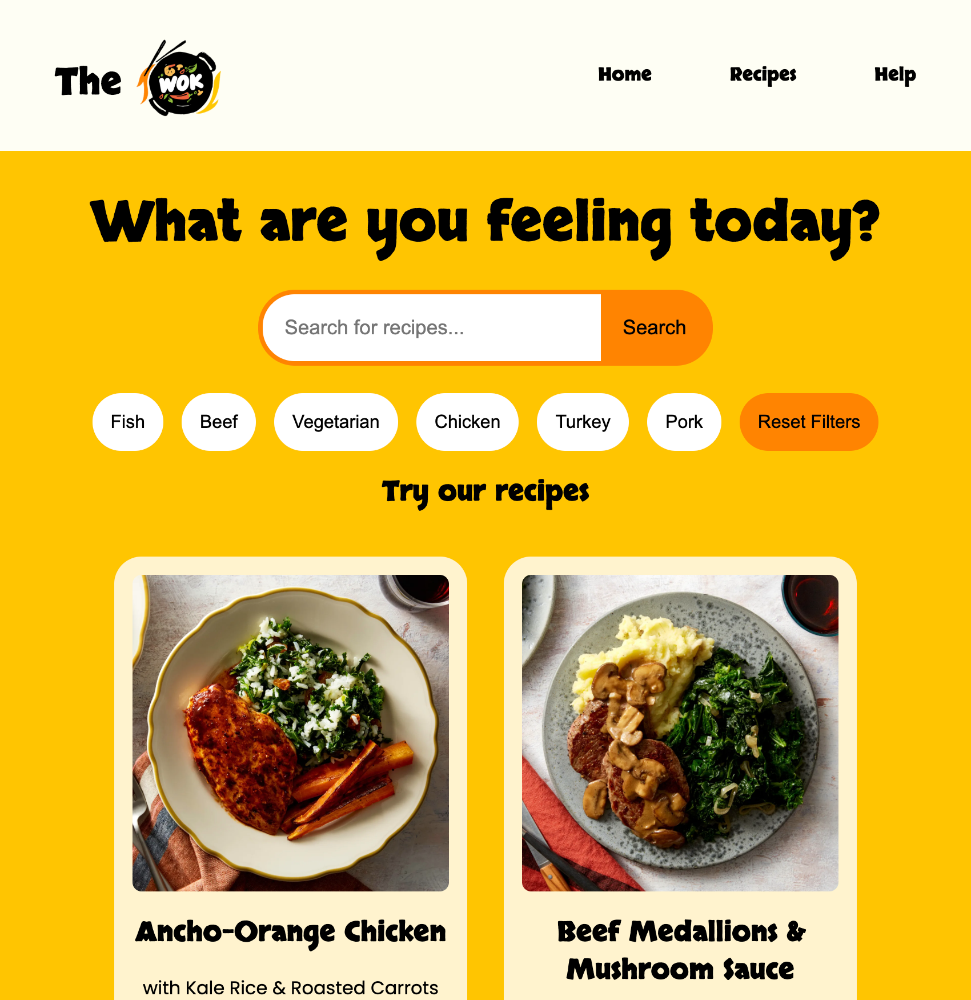
Medium Home Page
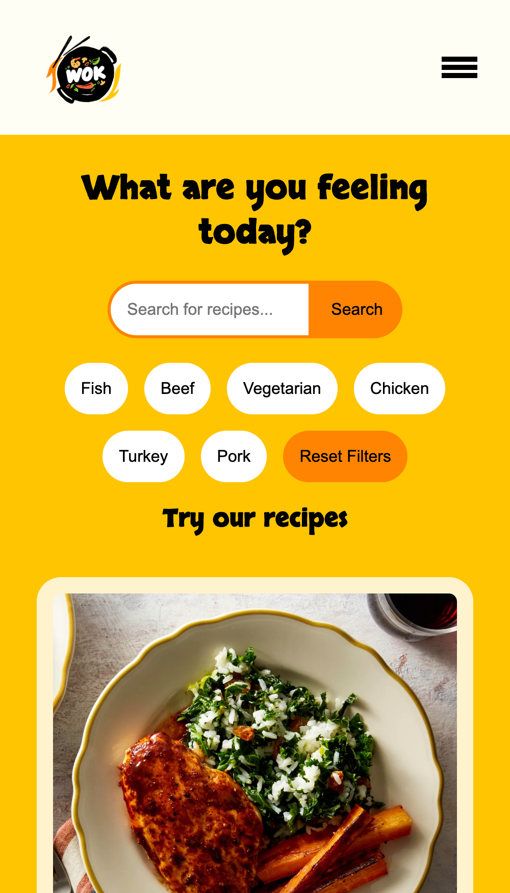
Small Home Page
Search Result and Error Screen
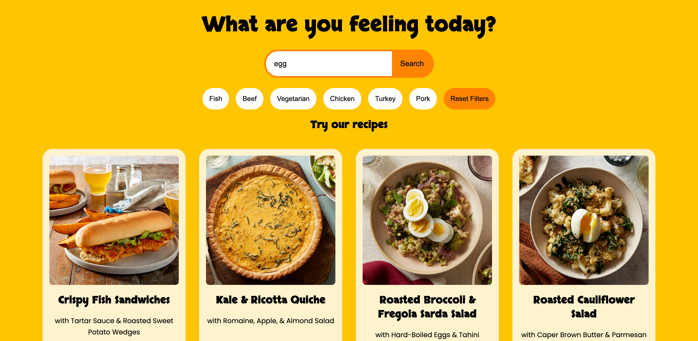
Search Result Screen
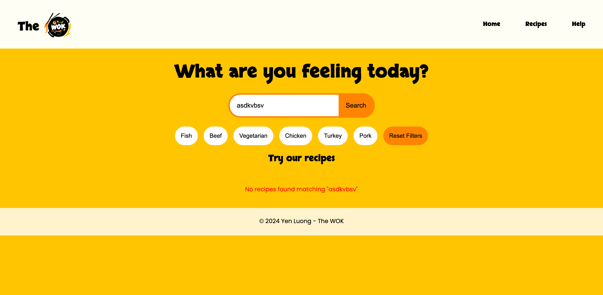
Error Screen
Detail Page
The detail page is designed to provide all necessary information about a specific recipe. It displays the recipe’s title, subtitle, and description, alongside a list of ingredients with corresponding images. I also included step-by-step instructions with visuals to guide users. The layout is fully responsive, adapting dynamically to different screen sizes for a seamless user experience.
Desktop Detail PageTablet Detail Page
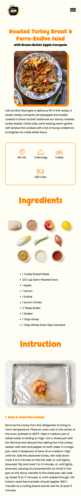
Mobile Detail Page
Help Page
To make the website more user-friendly, I included a help page that provides detailed guidance on navigating and using the website effectively.
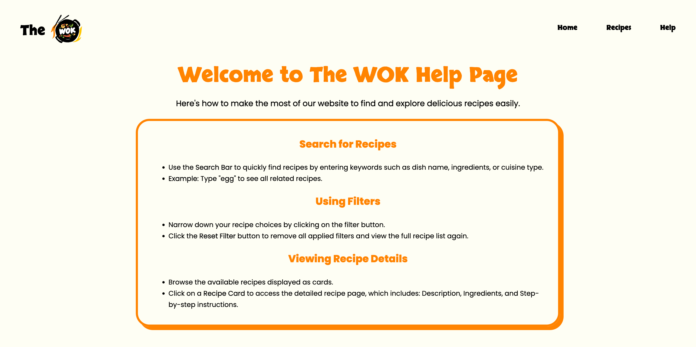
Desktop Help Page
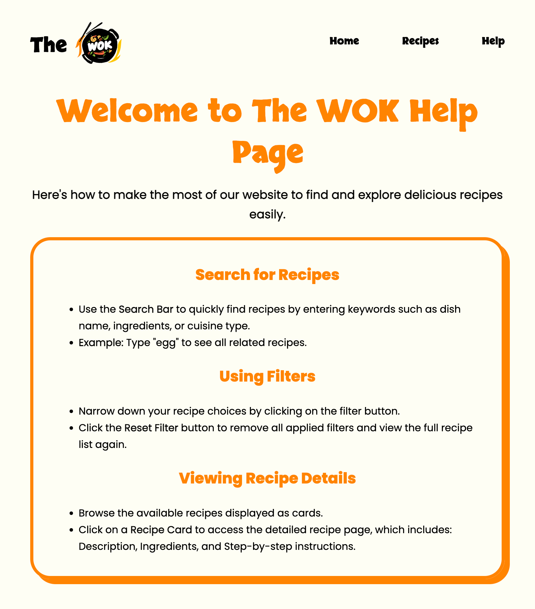
Tablet Help Page
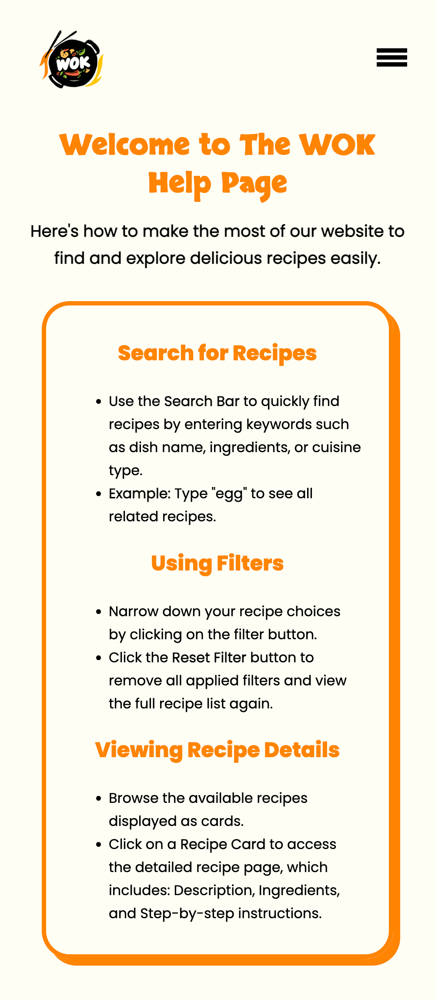
Mobile Help Page
The Results
Throughout this project, I gained valuable experience in PHP and database integration. The project successfully met its objectives:
Functionality: Achieved seamless data retrieval and dynamic content display.
User Experience: Positive feedback highlighted the intuitive design and effective filtering system.
Skills Development: Improved proficiency in server-side programming and database management.
The iterative process allowed me to refine the website's functionality and design. If given more time, I would implement additional features, such as filtering recipes by cook time, servings, or calories, to further enhance user experience.